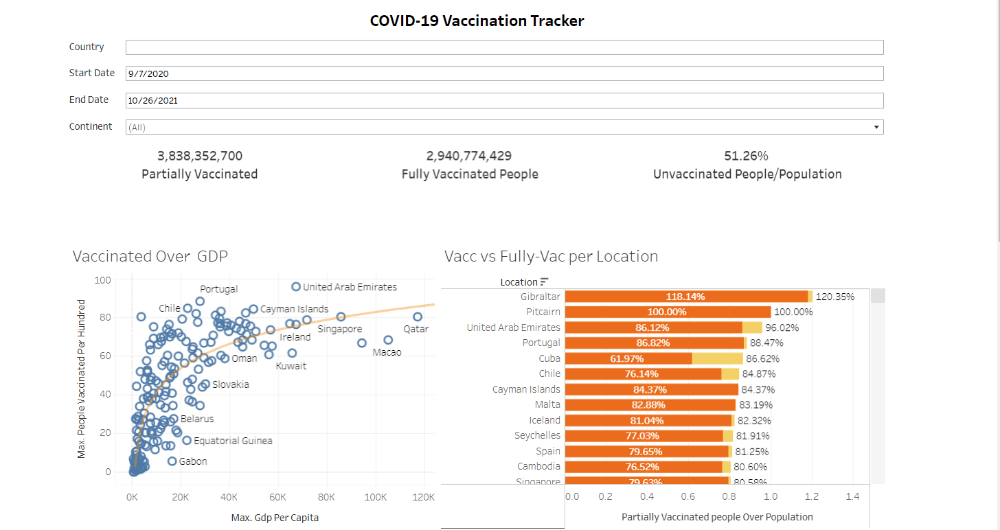

Below is a culmination of end-to-end data analytics projects, public dashboards and programming language scripts that detail different aspects the profession, from data cleaning to statistical analysis.
Telecom Customer Churn Analysis
Skills Used: MS Power BI, MS PowerPoint
Analyzed open source data from Maven Analytics detailing customer demographics, churn reasons and location of a California based Telecommunication company.
Created a Power BI report and presentation to highlight key findings and provide recommendations.

IMDB Top 100 Movies Analysis
Skills Used: SQL, Python, Tableau
Compared the shift of genre preferences in movies between two decades [2000's & 2010's].
Hosted findings and analysis on Kaggle, a publicly available data science website.

COVID-19 VACCINATION TRACKER
Skills Used: Tableau Public
Created an interactive dashboard by scraping publicly available COVID-19 data from September 2020 to October 2021.
Hosted the dashboard on Tableau Public where anyone can search the data by Country, Date and Continent.
BELLABEAT CASE STUDY
Skills Used: MS Excel, SQL, R
Analysis on a fictional wellness company was conducted by merging multiple files and visualizing data using programming languages and their packages.
Part of the Google Data Analytics Professional Certificate capstone project, hosted on Kaggle.
Hyderabad Tourism Analysis
Skills Used: SQL, PYthon, MS Power BI
Analyzed domestic and foreign tourism in Hyderabad, Telangana, India.
Created a comprehensive BI report that details both foreign and domestic tourism.
Python Scripts
Skills Used: Python
Brief collection of scripts that highlight key concepts and projects done using the Python programming language.
SQL Scripts
Skills Used: Python
Brief collection of scripts that highlight key concepts and projects done using the Structured Query Language using SSMS and Microsoft SQL Server.